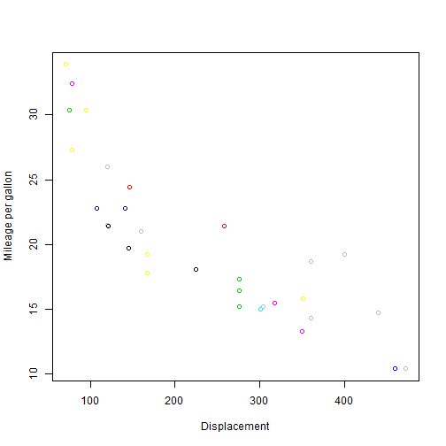

Bhanu Pouduyal
Coursera- Developing Data Products
Shiny and Slidify make it easy to convert R codes and R markdown documents to present on the Worldwide Web.
data(mtcars)
head(mtcars)
## mpg cyl disp hp drat wt qsec vs am gear carb
## Mazda RX4 21.0 6 160 110 3.90 2.620 16.46 0 1 4 4
## Mazda RX4 Wag 21.0 6 160 110 3.90 2.875 17.02 0 1 4 4
## Datsun 710 22.8 4 108 93 3.85 2.320 18.61 1 1 4 1
## Hornet 4 Drive 21.4 6 258 110 3.08 3.215 19.44 1 0 3 1
## Hornet Sportabout 18.7 8 360 175 3.15 3.440 17.02 0 0 3 2
## Valiant 18.1 6 225 105 2.76 3.460 20.22 1 0 3 1
This slide shows top few records of mtcars dataset.
plot(mtcars$disp, mtcars$mpg, col=c(mtcars$disp, mtcars$mpg),
xlab = "Displacement", ylab = "Mileage per gallon")

The purpose of this presentation was to show you basic characterististics of Slidiy and how can it be integregated with R code. Thank You for viewing my slides